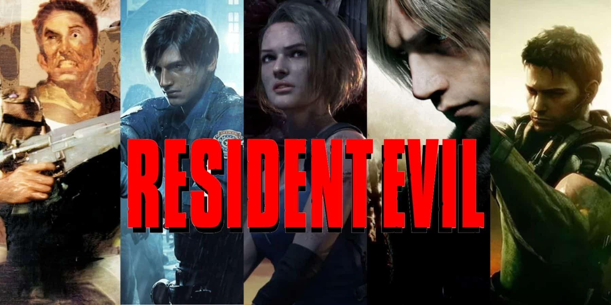
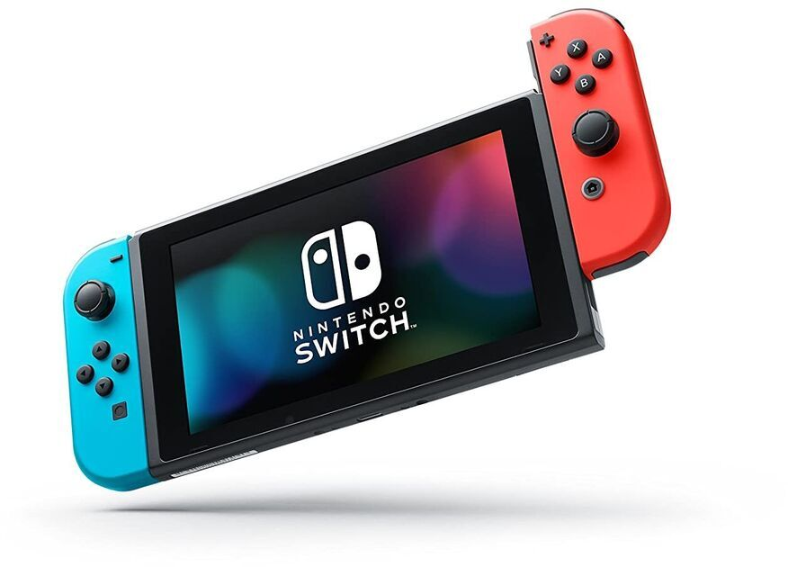
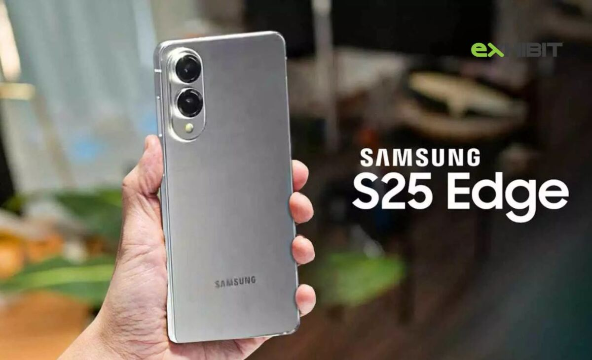

Lajme rreth teknologjise
1. Mbyllja e serverëve për 14 lojëra të njohura
Më shumë se një duzinë lojërash të njohura si Resident Evil, WWE dhe Madden NFL do të mbyllin serverët e tyre online këtë vit, duke filluar me Dauntless më 29 maj dhe MultiVersus më 30 maj. Këto mbyllje vijnë për shkak të rënies së interesit të lojtarëve dhe kostove të larta të mirëmbajtjes .

2. Nintendo parashikon shitje të mëdha për Switch 2
Nintendo ka parashikuar shitjen e 15 milionë njësive të konsolës së re Switch 2 për vitin fiskal të ardhshëm, pavarësisht një rënieje të shitjeve dhe fitimeve në vitin aktual. Kjo vjen pas një kërkese të lartë fillestare dhe pritshmërive për rikuperim financiar

3. Lançimi i Doom: The Dark Ages
Pjesa më e re e serisë Doom, e quajtur Doom: The Dark Ages, do të jetë e disponueshme më 15 maj për PS5, Xbox Series X/S dhe PC. Loja sjell një atmosferë mesjetare me armë të reja dhe një histori që lidh ngjarjet e Doom 64 me ato të Doom (2016).

4. Samsung prezanton Galaxy S25 Edge dhe telefonin tri-palësh
Samsung ka zbuluar detaje për Galaxy S25 Edge, i cili do të ketë një profil të hollë, çip Snapdragon 8 Elite dhe një ekran AMOLED 6.7 inç. Gjithashtu, kompania ka prezantuar një prototip të një telefoni tri-palësh që pritet të dalë në fund të vitit 2025.

5. Google zgjeron mbështetjen për ID-të digjitale
Google ka zgjeruar mbështetjen për portofolin digjital në Mbretërinë e Bashkuar dhe shtete të tjera të SHBA-së, duke lejuar përdoruesit të ruajnë ID-të dhe pasaportat e tyre në mënyrë të sigurt në pajisjet e tyre.

6. Lançimi i The Last of Us Part II Remastered për PC
Më 3 prill 2025, The Last of Us Part II Remastered u bë i disponueshëm për PC, duke përfshirë përmirësime grafike, një modalitet të ri roguelike dhe përmbajtje shtesë pas skenave. Ky lançim përkon me sezonin e dytë të serialit televiziv të bazuar në lojë.

7. Grand Theft Auto VI – Lançimi dhe detaje të reja
Rockstar Games ka njoftuar se GTA 6 do të lançohet më 26 maj 2026 për PlayStation 5, Xbox Series X/S dhe, më vonë, për PC. Lajmi u shoqërua me publikimin e një trailer-i të dytë, i cili zbulon më shumë rreth protagonistëve: Lucía Caminos dhe Jason Duval, një çift kriminal që përfshihet në një komplot të rrezikshëm në qytetin e inspiruar nga Miami, Vice City, dhe shtetin fiktiv Leonida . Diario AS LOS40 The Guardian Ky kapitull i ri i serisë sjell një ndryshim të rëndësishëm në tonin narrativ, duke u fokusuar në një histori dashurie midis dy protagonistëve, një element i pazakontë për serinë e njohur për cinizmin e saj .

Ghost of Yōtei – Lançimi i konfirmuar për tetor 2025
Sucker Punch Productions ka njoftuar se Ghost of Yōtei, vazhdimi i shumëpritur i Ghost of Tsushima, do të lançohet më 2 tetor 2025 ekskluzivisht për PlayStation 5. Loja ndjek historinë e Atsu, një luftëtare që kërkon hakmarrje ndaj një grupi të njohur si Yōtei Six, të cilët vranë familjen e saj. Ngjarjet zhvillohen në vitin 1603, në rajonin e Ezo (Hokkaido e sotme), rreth Malit Yōtei .Loja prezanton armë të reja si ōdachi, kusarigama, tanegashima dhe katanat e dyfishta, si dhe një botë të hapur më të pasur dhe të detajuar. Për më tepër, do të jetë e disponueshme një Collector’s Edition, e cila përfshin një maskë të replikës së Atsu dhe përmbajtje shtesë në lojë .